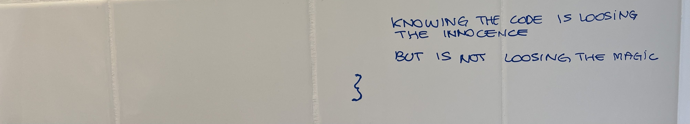
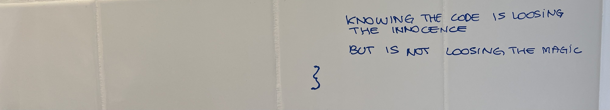
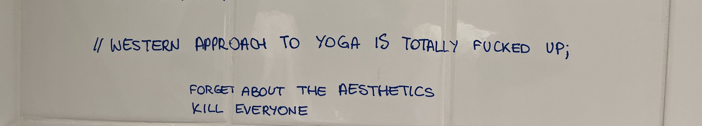
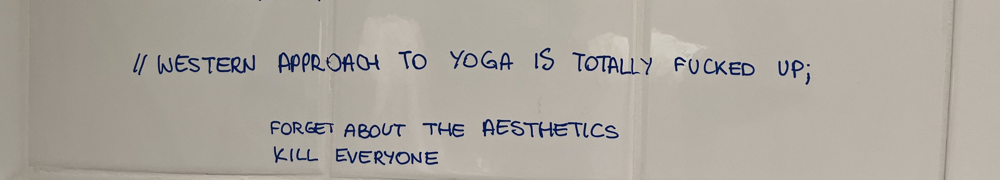

>>> code
>>> pseudo-code
>>> code
>>> pseudo-code
wc notebook
My notes from the digital design course, taught by Professor Lluís Nacenta, taken in my master's degree at BAU
BAU bathrooms, second floor, Granada building, Barcelona
Ses0: digital media as numerical/verbal synesthesia. searching for the code {
yuk hui <- Bernard Stiegler (jail)
a file is a number //phenomenology 'intelligence is the ability of creating tools' intelligence -> tools tools -> shape the world and then the tools are reintegrated in our organism as ORGANS
//mesopelágica
NUMBER/ALGORITHMS/WORDS
print("hello world")
don't accept the code you don't know
[understanding as the main objective]
memory as an experience
a tool is not a system
"the radical substance of everything is music" "i know 2 or 3 masks of the people i really know / the people i really love"
meaning VS sense
we can disagree on sense but we can discuss sense
act is always political doing is always political //hazlo con sentido
//the sense of the code[supercollider]:
//it feels like rain //round - no direction //echo === surface //unpredictable //no rhythm //conversation //expectations never fulfilled
-> the code is not the (complete) explanation of the output is gives
knowing the code is loosing the innocence but is not losing the magic
}
 

Ses1: Feedback loop & hacking {
health as a relation we establish with our organs. having a healthy relationship with digital media is about how you relate with yourself
NUMBERS/(ai)ALGORITHMS/WORDS
a mathematical model of something is a simplification of something statistics-> the science of errors
language is not less complex than world.
//this is why we build fictions (== world made of words)
words != numbers
numbers (models) are more simple than the world
//i love you but i cannot take it anymore
words are more difficult than the world
AI WTF{} --> LLM
Stephen woltram: we are living in an era where numbers are not more simple than words anymore
cybernetic as the organic understanding of machines
//machines as organs
FEEDBACK LOOP{}
the main thing in an individual
we are in a permanent feedback loop.
INPUT <-> OUTPUT
readapt itself
the output as an input in order to readapt the model
//as humans - animals - plants - organism do
//AI is just a systematic way of using feedback loops
HACKING{}
'A hack is a kind of beveled cut with an axe.
Not a clean slice, but an oblique chop –
opening something up in a way that’s not easy to repair'
code{computer programming, code of conduct}.link
//asemic writing
}
 

Ses2: code aesthetics {
CODE CONVERSATION/MONOLOGUE/POETRY
code is the blood that runs into contemporary veins
code is not just a way of communication between humans and machines it is a way of communication between humans
HTML liniendicke, agf HTML
//in order to no reach the brain first she uses the code
}


Ses3: Logocentrism & conversation {
CFeedback loop / interface / hacking
abstraction
interface == the membrane between two different media
markov chain
the problem with art is that nothing make sense anymore hack the code -> build your own code Don't be safe. Be free.
//if we start seeing it as someone else's //responsibility to do this work and it's our //job just to go home and pop some popcorn //and curl up on the couch to watch Transformers, //well, then next time they might just win. //Let's not let that happen.
it's paralyzing to try to understand what's going on.
//western approach to yoga is totally fucked up
forget about aesthetics kill everyone start everything from scratch don't get lost in the relationism
if you can fix it then it is not a hack
calculation and acustic are interchangeable
music is a good way to recover what was took away in the process of abstraction.
computing do the same.
1687, Newton : Philosophiae Naturalis Principia Mathematica
-> mathematic (numbers) != philosophy (words)
2018, some fuckers in Silicon Valley: LLM
-> mathematic (numbers) == philosophy (words)
LLM == a computational model of language // you can now have a conversation with the machine
//prompt engineering== contemporary poetry
Logocentrism is no longer solely related to philosophy.
if i'm good at talking - i'm good at everything <- LLM
art and science are the same and Newton was wrong.
}